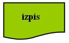
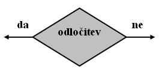
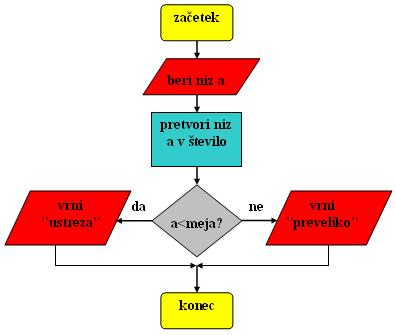

- Diagram poteka je grafièni naèin opisovanja algotritma.
- Grafièni naèin je naèin s pomoèjo risbe.
- V diagramu poteka najdemo torej simbole posameznih operacij, ki jih mora izvesti algoritem.
- Vrste simbolov v diagramu poteka so:
- simbol za zaèetek in konec diagrama poteka: to so zaobljeni pravokotniki ali ovali
- povezovalne èrte s pušèicami, ki nakazujejo smer poteka operacij:
- simbol za posamezne korake ali operacije algoritma: to so pravokotniki

- simbol za vnos in iznos podatkov: to so paralelogrami
- simbol za izpis rezultatov (na papir):
- simbol za odloèitev: to so rombi
- Pa si spet oglejmo kar primer:
- Besedni opis problema in rešitve.
- "Vnos celega števila s pogojem": Napiši program, ki prebere celo število ter ugotovi, èe je manjše od izbrane mejne vrednosti. Èe je manjše, naj nam program to število vrne, èe pa je veèje, naj nas program opozori, da je število preveliko in nas pozove, da vnesemo novo število. Vprašamo se, kaj vse bomo morali postoriti za rešitev problema in to opišemo v nekaj stavkih.
- Prebrati moramo število.
- Prebrano število, ki je niz, moramo pretvoriti v pravo število.
- Doloèiti moramo mejno vrednost vnosa.
- Ugotoviti moramo, èe je vnešeno (prebrano število) manjše od izbrane mejne vrednosti.
- Izpisati moramo ustrezno sporoèilo.
- "Vnos celega števila s pogojem": Napiši program, ki prebere celo število ter ugotovi, èe je manjše od izbrane mejne vrednosti. Èe je manjše, naj nam program to število vrne, èe pa je veèje, naj nas program opozori, da je število preveliko in nas pozove, da vnesemo novo število. Vprašamo se, kaj vse bomo morali postoriti za rešitev problema in to opišemo v nekaj stavkih.
- Psevdokoda
- "Vnos celega števila s pogojem": Pri opisovanju problema si pomagamo z besedami, ki spominjajo na ukaze programskega jezika:
- beri niz a;
- pretvori niz a v število a;
- doloèi mejno vrednost;
- primerjaj števili a in mejno vrednost;
- izpiši ustrezno sporoèilo;
- "Vnos celega števila s pogojem": Pri opisovanju problema si pomagamo z besedami, ki spominjajo na ukaze programskega jezika:
- Diagram poteka
- "Vnos celega števila s pogojem": Ukaze psevdokode zamenjajo simboli posameznih korakov algoritma 
- Program (raèunalniški programi)
- "Vnos celega števila s pogojem": Problem opišemo kar s programom v programskem jeziku Java.
- prebrati število a kot niz
- prebrani niz a pretvoriti v število - to storimo z metodo "Integer.parseInt(niz)";
- doloèiti želeno mejno vrednost vnosa
- ugotoviti, ali je a manjši od mejne vrednosti - to storimo s stavkom "if-else"
- izpis rezultata z metodo "JOptionPane.showMessageDialog()"
- "Vnos celega števila s pogojem": Problem opišemo kar s programom v programskem jeziku Java.
- V okolju za pisanje izvorne kode v jeziku Java, za prevajanje in za interaktivno delo zapiši zgornji program "MejniVnos". Pomagaj si s sliko.

- Kodo lahko tudi kopiraš iz te datoteke in jo prilepiš v okolje, v katerem pišeš programèke. Pozor: koda, ki jo boš kopiral/a, vsebuje eno, dve, tri ali štiri napake. Èe želiš, da bo program deloval, moraš napake odkriti in jih odpraviti.
- Izvorno kodo shrani pod imenom "ImePriimek35.java". ImePriimek je seveda tvoje lastno ime in priimek.
- Datoteko "ImePriimek35.java" prevedi.
- Prevedeno datoteko zaženi, preveri rezultat v interaktivnem oknu in poklièi profesorja, da vidi rezultat.
- Preriši diagram poteka v tej uèni enoti v zvezek.
1. V zvezek nariši simbola za zaèetek in konec diagrama poteka.
2. V zvezek nariši pušèice za nakazovanje smeri poteka izvajanja algoritma.
3. V zvezek nariši simbol za posamezne korake ali operacije algoritma.
4. V zvezek vriši simbol za vnos in iznos podatkov v diagramu poteka.
5. V zvezek nariši simbol za izpis rezultatov v diagramu poteka.
6. V zvezek nariši simbol za odloèitev v diagramu poteka.
7. Koliko znaša mejno število v programu te uène enote?
8. Katerega tipa je spremenljivka, ki jo preberemo v programu te uène enote?
9. Katerega tipa je spremenljivka, ki jo primerjamo z mejno vrednostjo v programu te uène enote?
10. Katerih elementov diagram poteka primera v tej uèni enoti ne vsebuje?
2. Zapiši od ene do pet kljuènih besed, ki povzemajo vsebino te uène enote.
3. Povezave do dodatnih informacij.
Gradiva na spletnih straneh fakultete za matematiko in fiziko v Ljubljani.
Spletni priroènik proizvajalca programskega okolja Java. To je podjetje Sun.
Angleška verzija Wikipedije